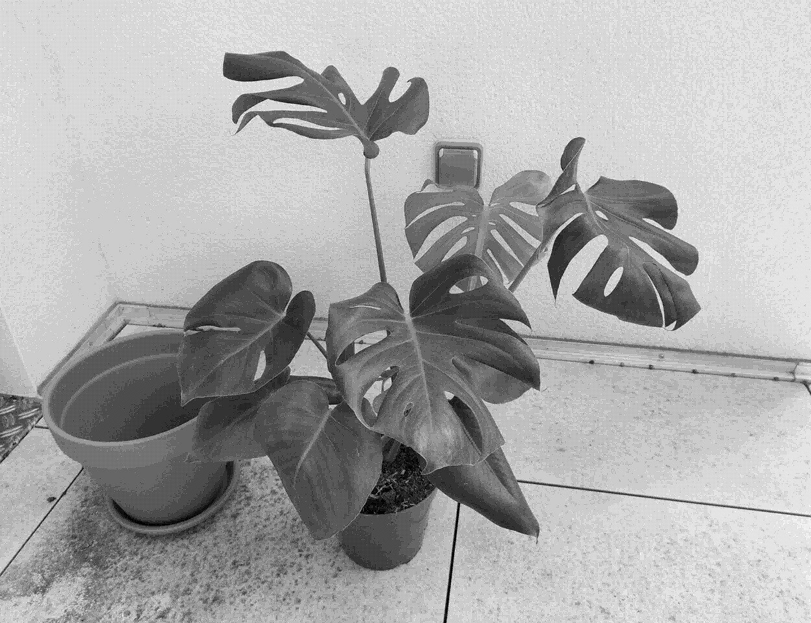

Monstera deliciosa

Care
A tropical plant that likes humidity and heat. Grows big and likes lots of indirect light exposure.
- Requires a lot of space
- Requires a rich and loose soil
- Likes to climb trees and structures
- A bit greedy: needs a soil that is kept slightly moist
- Likes very bright exposure, but not full sun
- Minimum temperature: 13-15°C
- Cannot withstand temperatures below -1°C